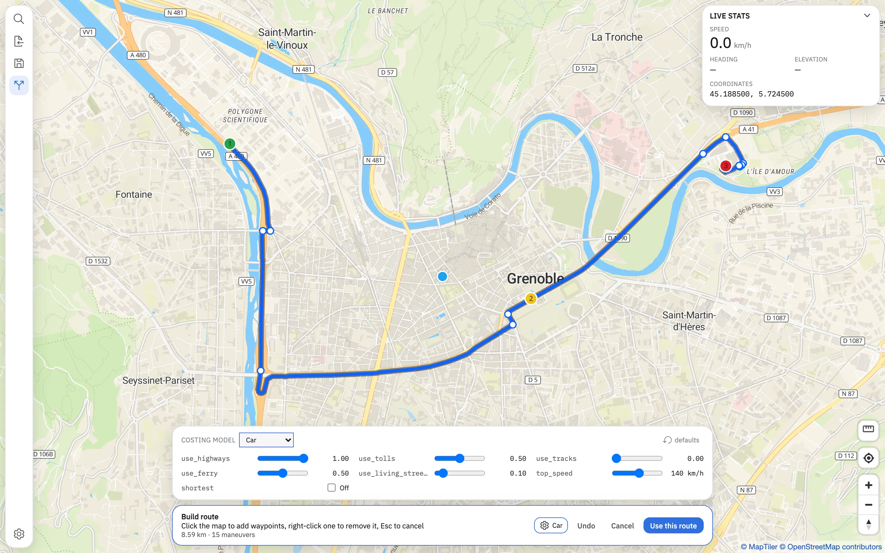
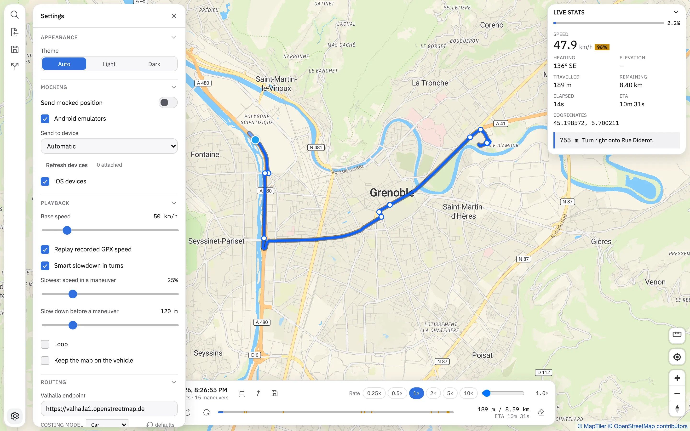
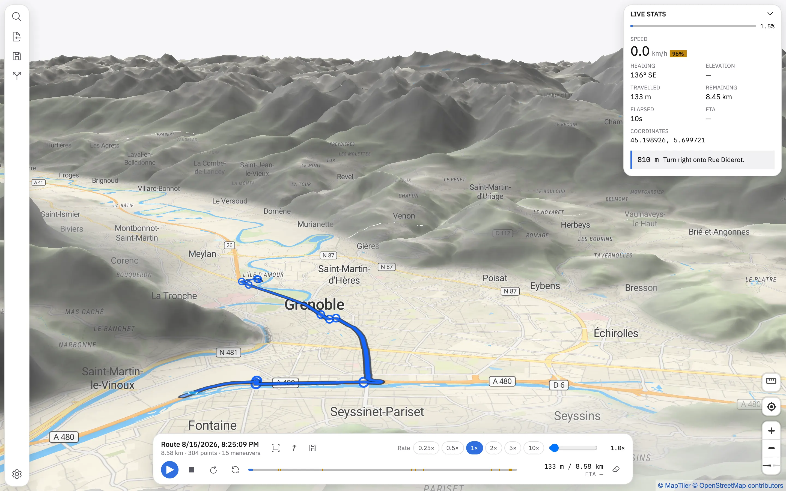
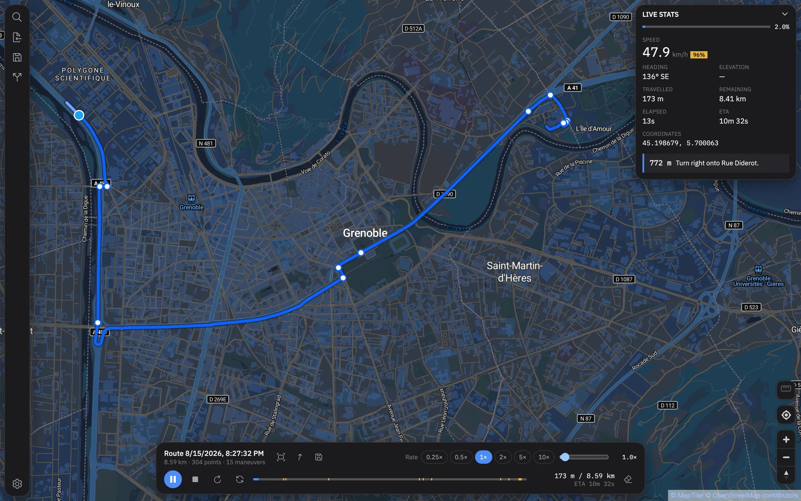
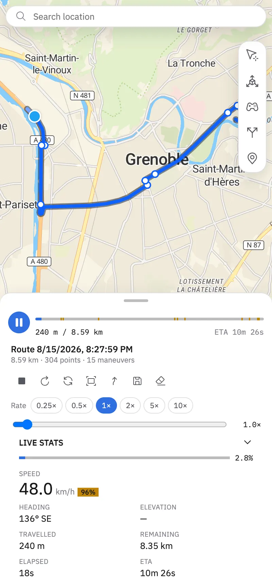
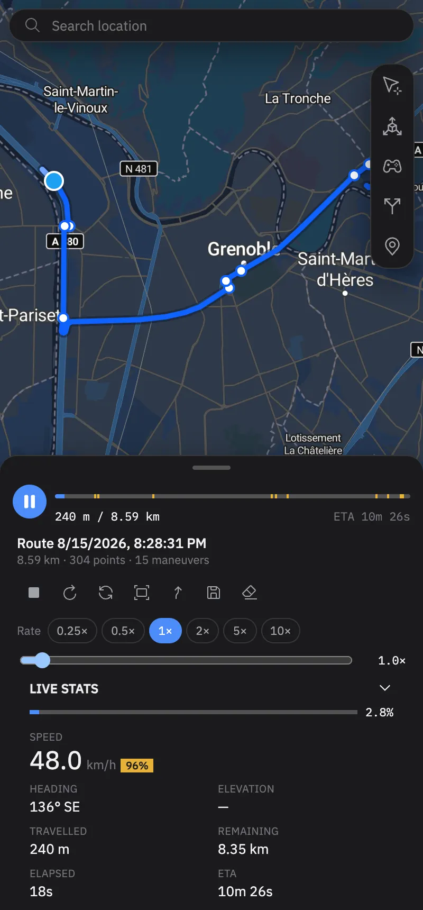

GPS Mocker feeds a fake GPS position to a phone, an emulator or a simulator — either a single point, or a whole route replayed at a speed that behaves like a real
drive.
Drive a device from your desk, or mock the phone from the phone.
The same Svelte frontend and the same Rust core ship as a desktop app that drives an attached device, and as an Android app that mocks its own location with
nothing attached at all.
The desktop app
macOS, Linux and Windows. Talks to whatever is plugged in.
Device → Prepare Device… is the whole setup. It asks the device what it is missing and fixes exactly that.
Nothing appears on the device's screen while it runs, so the app you are testing is never interrupted.
Several devices attached? Pick one, or fan out to All connected.
The Android app
No desktop, no cable, no root. Just the phone.
Pick it under Developer options → Select mock location app; the app offers a shortcut straight to that screen.
Playback runs from a foreground service, so a route keeps going after you leave the app.
You decide when its notification appears: while playing, all session, or never.
What it does
Everything a believable drive needs.
Replay, at a speed that convinces
The speed model eases into corners, follows the speed a GPX was recorded at when it carries timestamps, and can loop. Rate control from 0.25× to 10×.
Import GPX and GeoJSON
A GeoJSON export from a routing app brings its turn-by-turn instructions along. A GPX can be map-matched against Valhalla to get some. Export back out as
GPX.
Build a route from waypoints
Click the map, get a route through a Valhalla instance — with the full costing-options set exposed: highways, tolls, ferries, tracks, top speed, and the
rest.
Drive it by hand
WASD, or an on-screen pad on a touchscreen. Wander off the line and it routes you back to it.
Terrain, hillshade and 3D
A MapLibre basemap with a DEM behind it. Light and dark following the system. English and French.
A local route library
Save what you built, reopen it later, export it as GPX. It lives on the machine, not in an account.
Where the position goes
Four sinks, one map.
Whatever is attached, the position leaves the same route and the same play button.
Target
How
Host needed
Android phone or emulator
adb broadcast to this app's own Android build
any desktop
Android, on the phone itself
the Android build mocks its own location
none
iOS Simulator
simctl and a distributed notification
macOS
iOS device
lockdown service over libimobiledevice
macOS
The Android path carries latitude, longitude, altitude, bearing and speed. The iOS Simulator's notification carries a coordinate and nothing else — that is all it
accepts.
Screenshots
The real thing, not a mock-up.
Every image on this page is captured from the running app by tools/screenshots.mjs, so they cannot drift from what it looks like.

Build a route by clicking
Drop waypoints, tune the costing model, and see the length and manoeuvre count update as you go. Right-click a waypoint to take it back out.

Settings that are actually settings
Which devices to send to, how hard to slow into a turn, how far ahead to start, whether to loop, and where to find your own Valhalla.

Terrain and 3D
A DEM source behind the basemap, with hillshade and adjustable exaggeration. Useful when the route's elevation is the thing you are testing.

Dark, all the way down
The basemap switches with the shell. A dark chrome over a bright map would not read as a dark theme at all, so both change together.

The touch shell: one bottom sheet, three detents.

Transport controls in the thumb zone, map above.
Download
Get it.
Everything is published on GitHub Releases: desktop bundles for the three platforms, plus a universal Android APK.
Desktop
macOS .app, Windows .msi, Linux .deb.
Built and signed by CI on every tag. The macOS build is the one that can also talk to iOS Simulators and attached iOS devices.
One universal APK, gps-mocker-android.apk, covering every ABI.
The desktop app installs this same APK onto an attached device for you — you only need it by hand if you are mocking the phone from the phone. F-Droid and
IzzyOnDroid listings are being prepared; see
DISTRIBUTION.md.
Attach the device, or start an emulator, and check that adb devices lists it.
Open Device → Prepare Device…
That is it. Prepare installs the Android build if it is absent, grants the permissions, selects the app as the mock location provider, and exempts it from
battery optimisation — only whichever of those is actually missing.
The APK is fetched once from the GitHub release and reused from then on, so preparing a second device works with no network at all.
How it works
An ordered broadcast, and a result code back.
The desktop sends an ordered adb broadcast to a receiver in the Android build. Not a service: a broadcast is the only thing that reaches a package
in Android's stopped state — where it sits after a fresh install it has never been launched from, and after any force-stop, including the ones an OEM
battery manager does on its own.
The receiver is guarded by WRITE_SECURE_SETTINGS, which an ordinary app cannot hold but the adb shell can, so the surface is open to a developer's
own machine and to nothing else on the device.
Result
Meaning
1
ready, the fix was taken
2
installed, but not selected as the mock location app
3
not allowed to run its location service in the background
no answer
not installed
That is what Prepare Device reads, and what a failed position push reports instead of a raw adb line. Coordinates travel as string extras rather than
--ef floats: a float carries about seven significant digits, which is not enough for a degree with six decimals.
Privacy
No account, no analytics, no tracking.
Route building, map matching, place search and the basemap are fetched from online services — a Valhalla instance and a MapTiler style by default. Both are
configurable, so you can point the app at your own. Routes you save stay on the machine. There is nothing else going out.